Usable Security (USEC) events bring together security and usability experts from around the world to discuss recent advances and new perspectives on research in human factors in security and privacy. Workshops bring together researchers from different areas of computer science such as security, cryptography, visualization, artificial intelligence and machine learning as well as researchers from other domains such as psychology, social science, and economics.
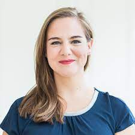 |
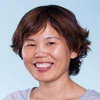 |
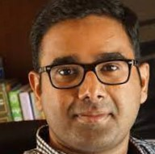 |
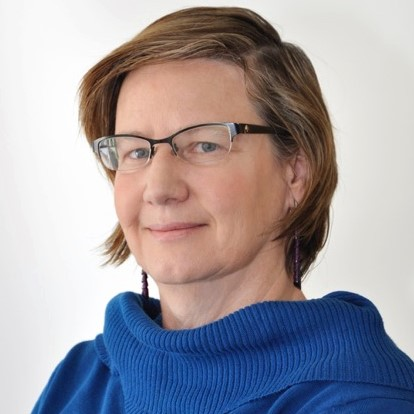 |
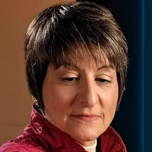 |
|
| Katharina Krombholz US-ASIA USEC |
Julian Jang-Jaccard US-ASIA USEC |
Alana Maurushat US-ASIA USEC |
Prashanth Rajivan US-ASIA USEC |
L Jean Camp US-ASIA USEC |
Mary Frances Theofanos US-ASIA USEC |
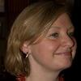 |
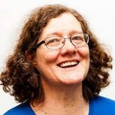 |
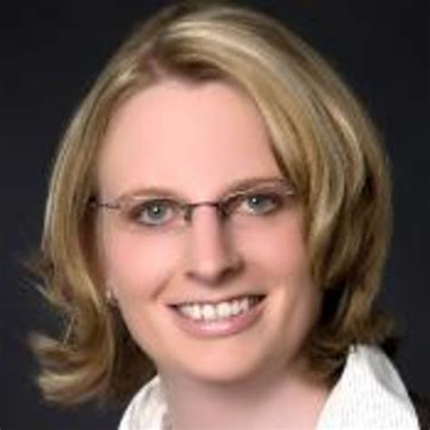 |
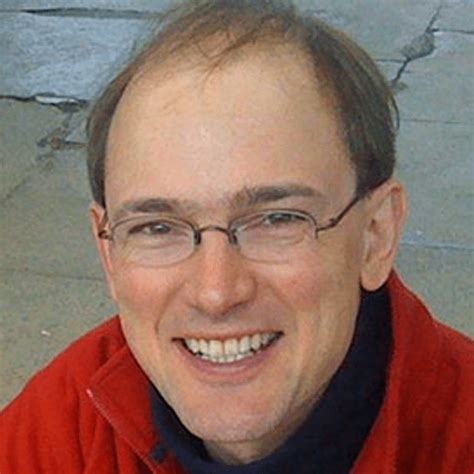 |
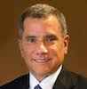 |
|
| Peter Mayer EURO USEC |
Angela Sasse EURO USEC |
Karen Renaud EURO USEC |
Melanie Volkamer EURO USEC |
Charles Weir EURO USEC |
David Balenson Publications |
Our ThanksTo Previous Steering Committee Members |
|||||
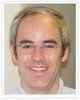 |
|||||
| Matthew Smith | Andrew A. Adams | Jim Blythe | |||